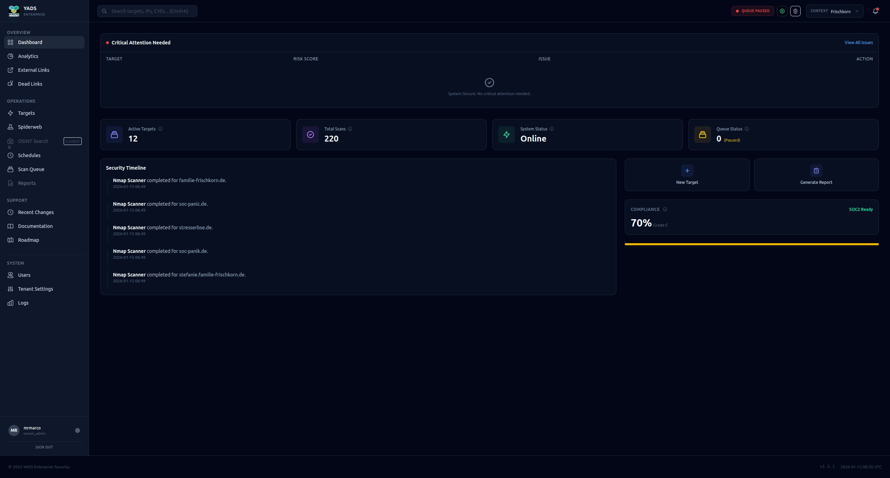
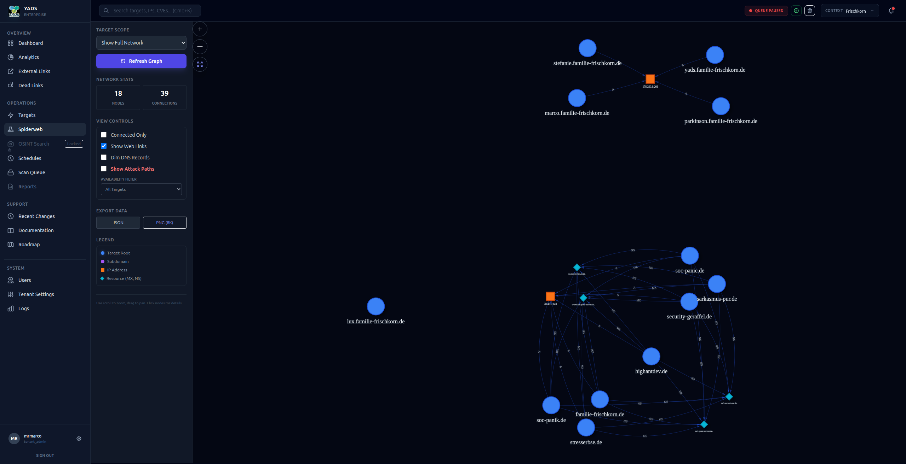
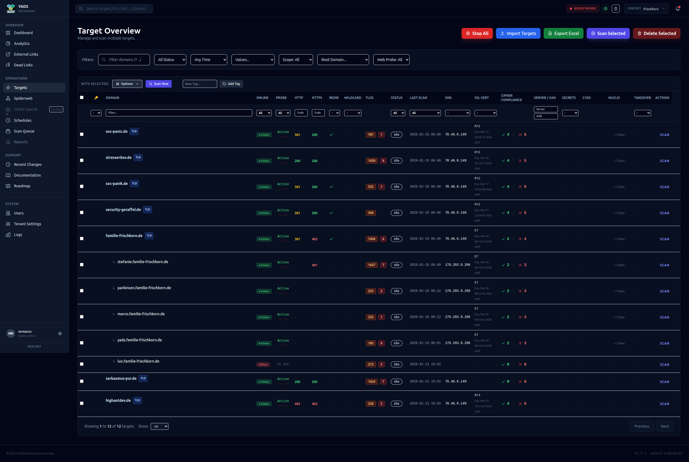
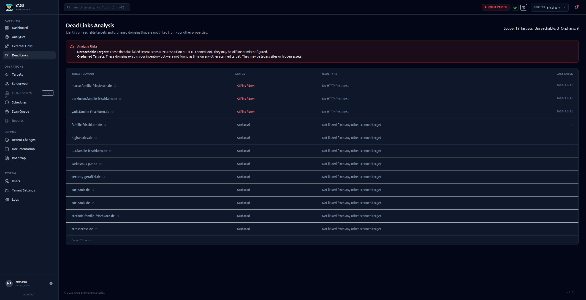
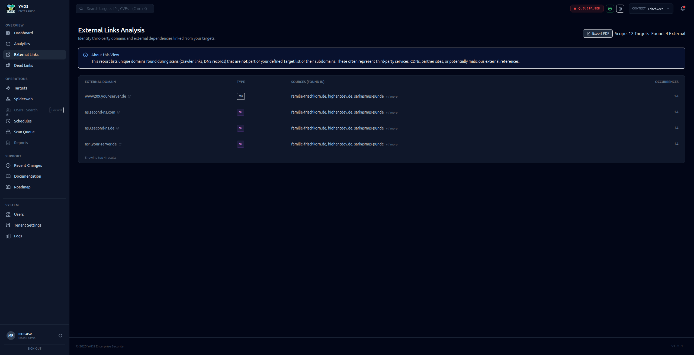
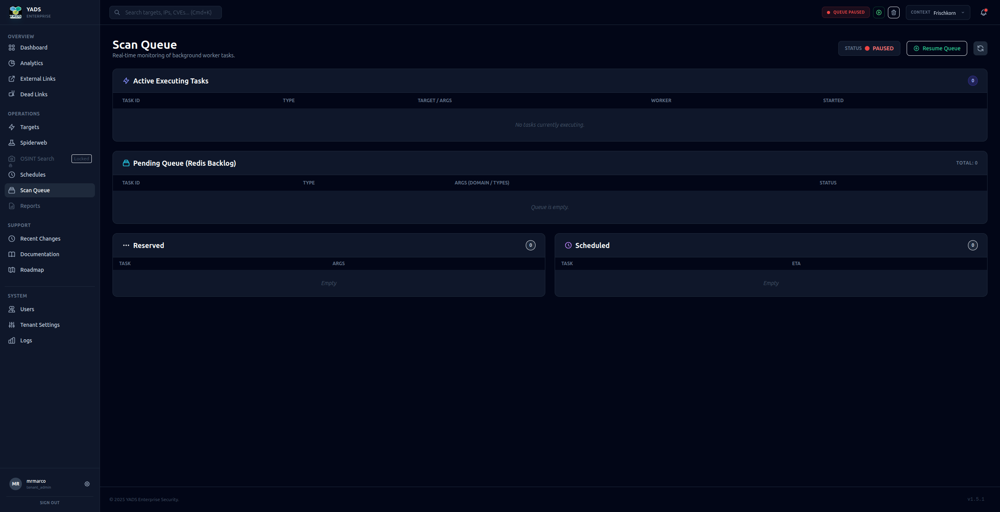
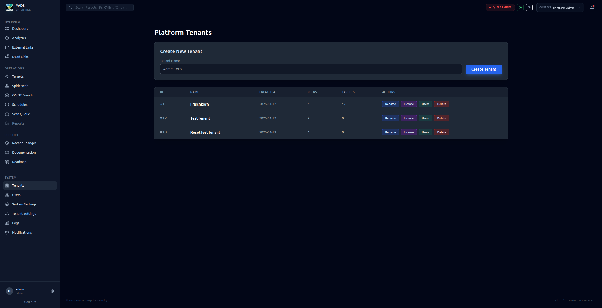
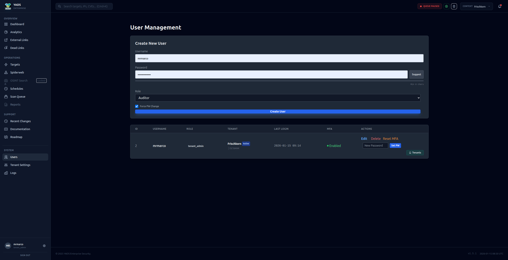
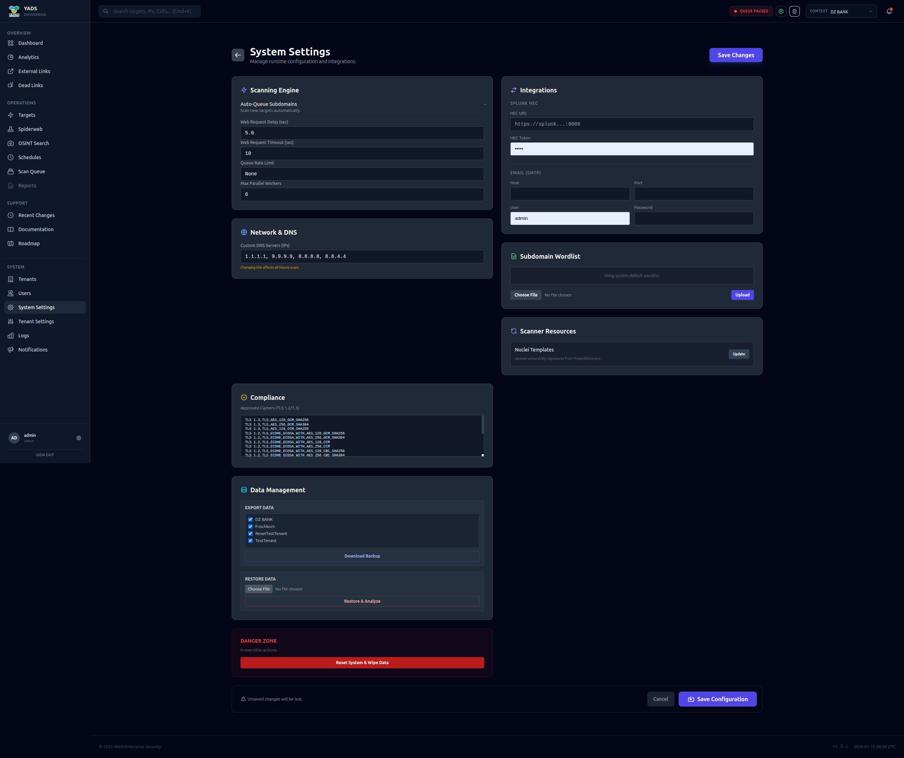
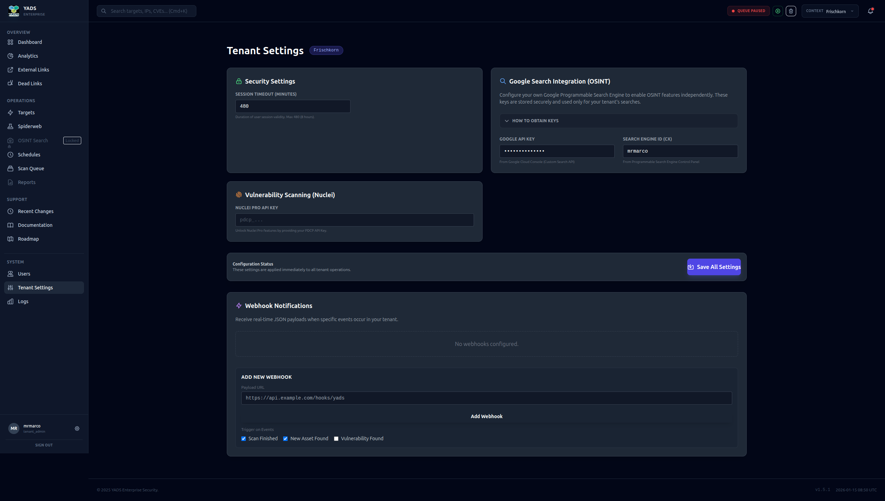

YADS - Yet Another DAST Solution
The Comprehensive Platform for Automated Vulnerability Scanning and Asset Management.
YADS is a powerful security solution designed to monitor, analyze, and protect your digital infrastructure.
🚀 Dashboard & Overview
The Dashboard provides an instant overview of the security status of your monitored assets. See active scans, critical vulnerabilities, and key statistics at a glance.

🕸️ Network Visualization
Understand the relationships within your infrastructure with our interactive Network Graph. Identify dependencies, visualize connections between hosts, and visually detect potential attack paths.

Features:
- Interactive nodes and edges
- Filter by connection types
- Export functions
🎯 Target Management
Manage all your targets in one place. Add new hosts, categorize assets, and keep track of the scan status of each individual endpoint.

📊 Analytics & Reporting
YADS provides deep insights into your security data.
General Analytics
Detailed evaluations of scans and results help you recognize trends.

Dead Links Analysis
Identify dead links that could pose a security risk or negatively affect user experience.

External Links
Monitor which external resources your applications are linking to.

📅 Scheduling & Automation
Automate your security scans. Schedule regular checks (daily, weekly) to ensure your infrastructure is continuously monitored without requiring manual intervention.

⏳ Queue Management
Keep control of running and pending tasks. The Queue Manager shows you exactly which scans are currently executing and what is queued next.

🕵️ OSINT - Open Source Intelligence
Utilize integrated OSINT tools to gather publicly available information about your targets and identify potential information leaks.

👥 Multi-Tenancy & User Management
YADS is built for teams and organizations of any size.
Tenants
Logical separation of data and resources through multi-tenancy.

Users
Manage access rights and user accounts centrally.

⚙️ Settings & Configuration
Customize YADS to your specific needs.
Global Settings
Configure system-wide parameters.

Tenant Settings
Specific configurations per tenant.
